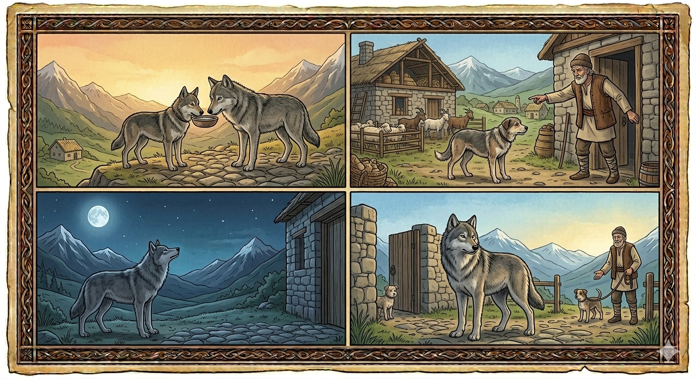

И.А. Дахкильгов. Хьехаме дувцарш - поучительные рассказы-притчи.
И.А. Дахкильгов. Хьехаме дувцарш - поучительные рассказы-притчи. Из ингушского фольклора.

Берзо баьккха сардам
Цхьан хана вошал леладеш хиннад берзои жӀалеи. Цкъа моцал эттача хана, жа-доахан дукха долча сагагара юачох хӀама еха жӀали гӀоргдолаш ваӀад яьй цар. Саго хӀама яла тигадац. ЖӀалега аьннад цо: "Сона чуотта, моцал фуй ховргдац хьона". Чуэттад жӀали. Сов дукха цунга хьежа кӀорда а даь, сага ковна юхеенай бордз. Хаьттад цо жӀалега: - Юха хӀана данзар хьо? - Сага чуэттад со. - Эттаче, дуне мел латта сага Ӏунал долда Ӏа; эгӀазвахача, хьона хӀама тохийла цо; адамо дуачох юхедисар мара кхача ма хилба хьа! - из сардамаш а даьха, бордз дӀаяхай, йоах.
РУССКИЙ
Волчьи проклятия
Когда-то давно побратались волк и собака. Однажды наступил голод. Они договорились, что собака сходит к человеку и попросит у него еды, потому что у человека много разного скота. Человек отказался дать им еды, а собаке он предложил: "Иди служить мне, и ты не будешь знать голода". Собака согласилась и осталась у человека. Не дождавшись собаки, волк подошел ко двору человека и спросил собаку: - Почему ты не вернулась? - Я осталась служить человеку. - Да будешь ты во веки вечные в услужении у человека; да будет он бить тебя, когда захочет сорвать гнев; да будешь ты есть объедки со стола человека! Произнеся эти проклятия, волк удалился.
ENGLISH
Wolf's Curses
A long time ago, a wolf and a dog became friends. One day, a famine struck. They agreed that the dog would go to a man and ask him for food, as the man had plenty of livestock. The man refused to give them any food, but he offered the dog a deal: 'Come and serve me, and you will never go hungry.' The dog agreed and stayed with the man. Not seeing the dog return, the wolf went to the man's yard and asked the dog: 'Why haven't you come back?' 'I've stayed to serve the man.' 'May you remain in the man's service for ever and ever; may he beat you whenever he wishes to vent his anger; may you eat the scraps from the man's table!' Having uttered these curses, the wolf departed.
НОХЧИЙН
ПОГОВОРКИ
Аьлан воӀ агара ма валва, берза кӀаза къоргара ма яйла, яхь йоацар нанас ма волва. Пусть княжеский сын не выйдет из люльки, пусть волчонок не выползет из логова, пусть мать не родит никчемного сына. May a prince's son not leave his cradle, may a wolf's cub not crawl from its den, and may a mother never bear a worthless son. Элан кӀант аган чура ма вала, берзан кӀорни Ӏуьрг чура ма йала, яхь йоцург нанас ма войла.Бордз топо мара юзаяьяц. Лишь ружье может насытить волка. Only a bullet can fully satisfy a wolf. Борз тоьпо бен йузийна йац.Воча сага дика дечул дикача сага Ӏунал де. Лучше прислуживать хорошему человеку, чем делать добро плохому. It's better to serve a good man than to do good for a bad one. Вочу стагана дика дечул, дикачу стагана Ӏуналла де.Воша – вешийна, пхьу – берза. Брат – брату, пес – волку (на съедение). A brother is for his brother, a dog is for the wolf (to be devoured). Ваша - вешина, пхьу - берзана.Деналои майролои къанахчун сий доаккх. Мужество и храбрость возвышают честь мужчины. Courage and bravery elevate a man's honour. Доьнало а майралло а къонахчун сий доккху.Дехар – лай, деннар – аьла. Просящий – раб, дающий – князь. The one who asks is a slave; the one who gives is a prince. Дехнарг - лай, делларг - эла.ЖӀали а соц ше кхоабача. Даже собака остается служить там, где ее кормят. Even a dog stays where it is fed. ЖӀаьла а соцу ша кхобучехь.Майрача сагах пхьу а (Ӏоажал а) кхер. Даже пес (смерть) боится храброго человека. Even a dog (even death itself) fears a brave man. Майрачу стагах пхьу а (Ӏожалла а) кхоьру.Нах болча наьха пхьу лакхе Ӏийхаб. У достойных людей даже пес лает свысока. Among worthy people, even the dog barks with dignity. Нах болчу нехан пхьу лакхера Ӏехна.Наьха мехка аьлла хулачул ший мехка лай хилар тол. Лучше быть рабом на родной земле, чем князем на чужбине. It's better to be a slave in your own land than a prince in a foreign one. Нехан махкахь эла хилачул шен махкахь лай хилар тоьлу.Хьакхашта ваьккха лай хьалмагӀа гӀийртав. Дай рабу послабление, он и тамадой захочет стать. Give a slave a little slack, and he'll try to become the head of the table. Эвхьаза ваьккхина лай баьрчче гӀиртина.ЦӀог олла мара хӀама ца эшаш жӀалена тара хул цхьавар. Некоторым достаточно прицепить хвост, чтобы они стали настоящими собаками. Some need only be given a tail to become real dogs. ЦӀог олла бен хӀума ца эшаш жӀаьлех тера хуьлу цхьаверг.Ши тӀоара вӀашагӀа мел техача вувлац халха. Не всегда танцуют там, где раздаются хлопки. Dancing does not always begin wherever clapping is heard. Ши тӀара вовшах мел тоьхча валац халха.